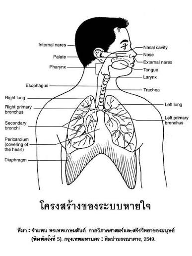

ระบบหายใจ

ระบบหายใจเป็นระบบที่มีความสำคัญต่อการดำรงชีวิต เพราะทำหน้าที่นำ ออกซิเจน (O₂) จากอากาศเข้าสู่ร่างกาย และกำจัด คาร์บอนไดออกไซด์ (CO₂) ซึ่งเป็นของเสียที่เกิดจากกระบวนการสร้างพลังงานของเซลล์ออกจากร่างกาย ออกซิเจนที่ได้รับจะถูกนำไปใช้ในกระบวนการสร้างพลังงาน ทำให้เซลล์และอวัยวะต่าง ๆ สามารถทำงานได้อย่างปกติ
อากาศจะเข้าสู่ร่างกายผ่านทาง จมูกหรือช่องปาก โดยภายในจมูกมีขนและเมือกที่ช่วยกรองฝุ่นละอองและสิ่งสกปรก รวมทั้งช่วยทำให้อากาศมีความชื้นและมีอุณหภูมิที่เหมาะสม จากนั้นอากาศจะผ่านคอหอย กล่องเสียง และหลอดลม ก่อนเข้าสู่หลอดลมฝอยที่อยู่ภายในปอด เมื่ออากาศเดินทางมาถึง ถุงลมปอด จะเกิดการแลกเปลี่ยนแก๊สระหว่างถุงลมกับหลอดเลือดฝอย โดยออกซิเจนจะแพร่เข้าสู่เลือด ส่วนคาร์บอนไดออกไซด์จะแพร่ออกจากเลือดเข้าสู่ถุงลมและถูกหายใจออก
การหายใจเข้าและหายใจออกเกิดจากการทำงานร่วมกันของ กระบังลมและกล้ามเนื้อระหว่างซี่โครง เมื่อหายใจเข้า กระบังลมจะหดตัวและเคลื่อนตัวต่ำลง ทำให้ช่องอกมีขนาดใหญ่ขึ้นและอากาศไหลเข้าสู่ปอด ส่วนเมื่อหายใจออก กระบังลมจะคลายตัวและเคลื่อนตัวสูงขึ้น ทำให้ช่องอกมีขนาดเล็กลงและอากาศถูกดันออกจากปอด
นอกจากการแลกเปลี่ยนแก๊สแล้ว ระบบหายใจยังมีส่วนช่วยในการควบคุมสมดุลของกรดและเบสในร่างกาย โดยการควบคุมปริมาณคาร์บอนไดออกไซด์ในเลือดมีผลต่อความเป็นกรดของเลือด หากร่างกายมีคาร์บอนไดออกไซด์มากเกินไป เลือดจะมีความเป็นกรดเพิ่มขึ้น ร่างกายจึงสามารถปรับอัตราการหายใจให้เหมาะสมเพื่อช่วยควบคุมระดับคาร์บอนไดออกไซด์ให้อยู่ในระดับที่เหมาะสม
การหายใจถูกควบคุมโดยสมองและระบบประสาท โดยสมองจะรับข้อมูลเกี่ยวกับระดับออกซิเจนและคาร์บอนไดออกไซด์ในเลือด แล้วส่งสัญญาณไปควบคุมกล้ามเนื้อที่เกี่ยวข้องกับการหายใจ ทำให้เราสามารถหายใจเข้าและหายใจออกได้อย่างต่อเนื่องแม้ในขณะที่ไม่ได้ตั้งใจควบคุมการหายใจ นอกจากนี้เมื่อร่างกายออกกำลังกาย เซลล์จะต้องใช้พลังงานมากขึ้น จึงต้องการออกซิเจนเพิ่มขึ้นและสร้างคาร์บอนไดออกไซด์มากขึ้น ทำให้อัตราและความลึกของการหายใจเพิ่มขึ้นตามไปด้วย
ระบบหายใจยังมีวิธีป้องกันสิ่งแปลกปลอมเข้าสู่ปอด เช่น ขนจมูกและเมือกที่ช่วยดักจับฝุ่นละออง รวมถึงการจามและการไอที่ช่วยขับสิ่งแปลกปลอมออกจากทางเดินหายใจ ดังนั้นระบบหายใจจึงไม่ได้มีหน้าที่เพียงแลกเปลี่ยนแก๊สเท่านั้น แต่ยังช่วยป้องกันระบบทางเดินหายใจและรักษาสมดุลภายในร่างกายอีกด้วย